Screens of 7 November 2026
A tour of the application
Evalia runs on the evaluator's own computer, in the browser. These are its screens on one fictional procurement, a hotel fit-out with three bidders, from registering the documents to the debrief letters.
What these screens are. The tender and the bidders are fictional, generated by script. Evalia's findings on them were read by a live AI model on the evaluator's computer. The decisions shown were recorded for this demonstration and are not an evaluation. No client has used Evalia yet. Its results on real public evaluations are on the results page.
How Evalia works, in two and a half minutes
Narrated, with captions.
1Every step, with its status
Each procurement opens on a list of its steps and where each stands, in words. Steps that cannot start yet say so.
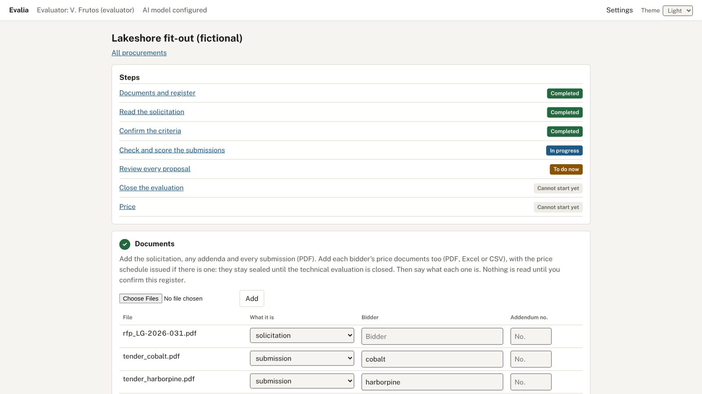
2Register the documents first
The evaluator adds the solicitation and every submission, and says what each file is and which bidder sent it. Nothing is read until this register is confirmed. Price files stay sealed until the technical evaluation is closed.
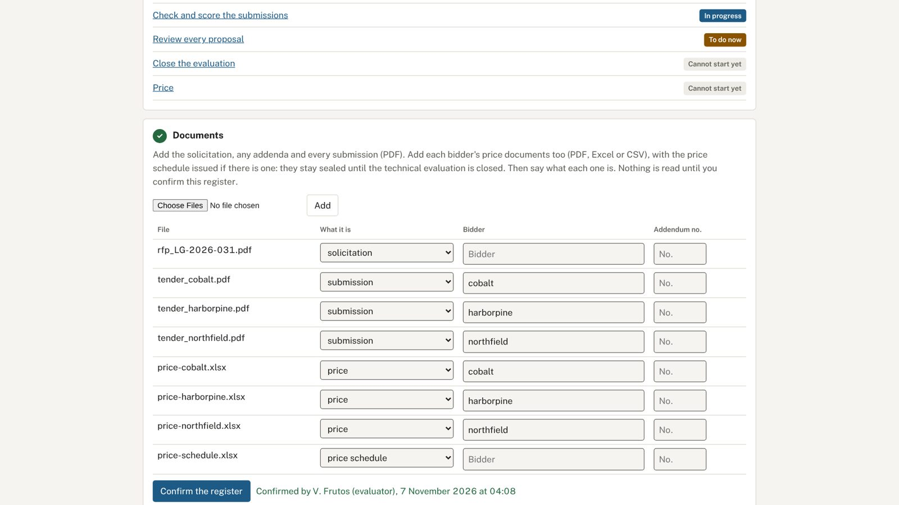
3Confirm the criteria before any score
Evalia reads the criteria and their points, each traced to its page, and code checks the scheme: points against the stated total, criteria missing or counted twice. The evaluator corrects or confirms them; no score is proposed before that.
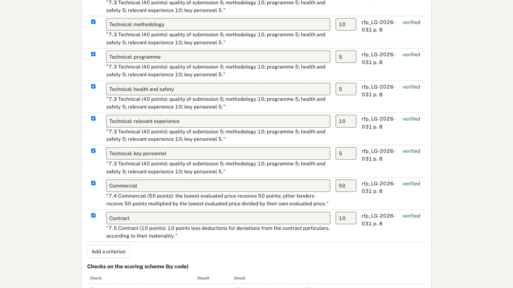
4Declare interests before seeing a bid
Each evaluator declares any conflict of interest with the named bidders before any submission is shown. A declared conflict stops that evaluator's review.
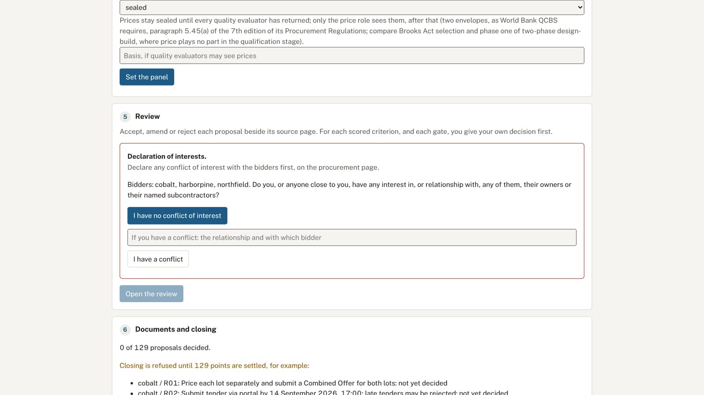
5On a gate, the evaluator decides first
For a mandatory requirement, the evaluator reads the submission and records a decision before Evalia's reading is shown.
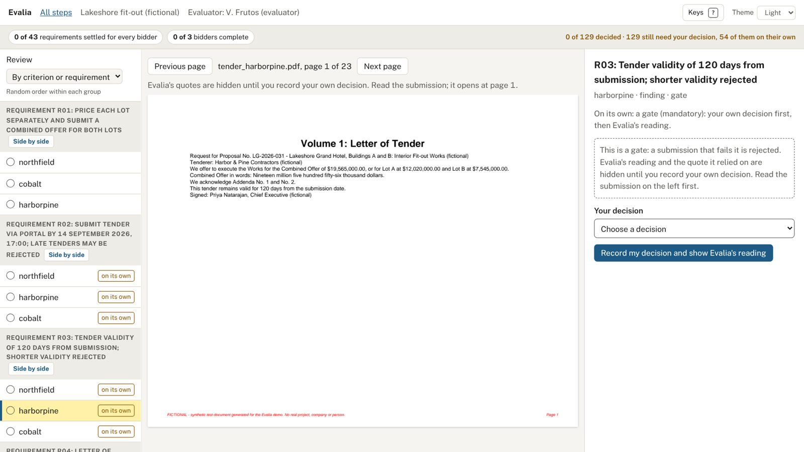
6Then Evalia's reading, and its evidence
Evalia then shows its reading and the passage it relies on, highlighted on the page. Code has checked the passage word for word against that page. Departing from one's own first decision needs a reason.
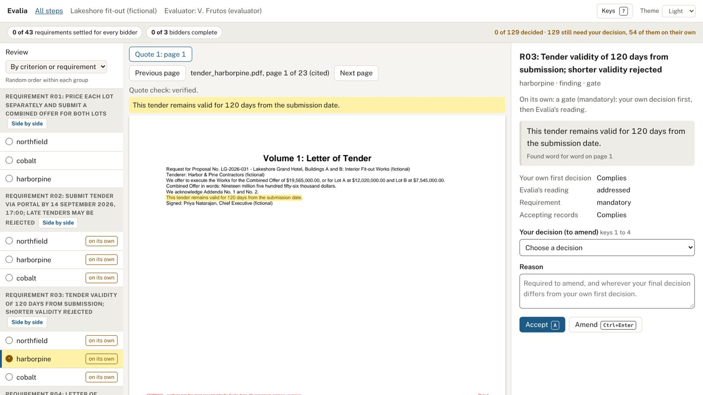
7What each decision changed
After each decision Evalia says what it recorded and what it changed, such as a requirement now settled for every bidder. Any decision can be undone; both are kept in the record.
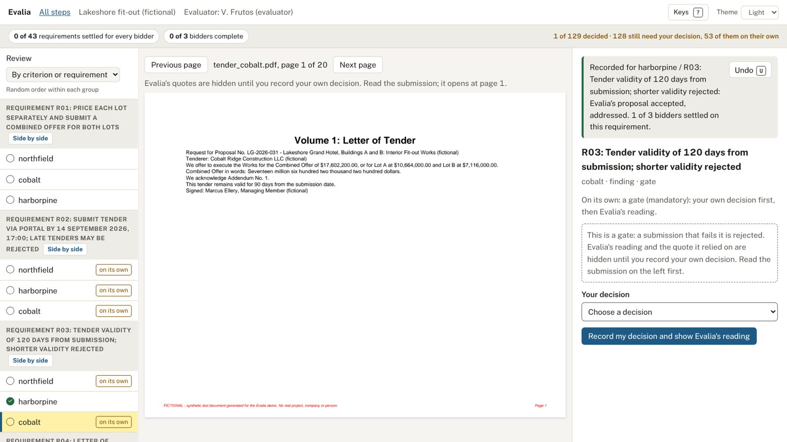
8One requirement, every bidder
The evaluator can open one requirement and see every bidder's finding beside its page. Findings can be accepted together only after each has been opened and ticked, with one reason for all.
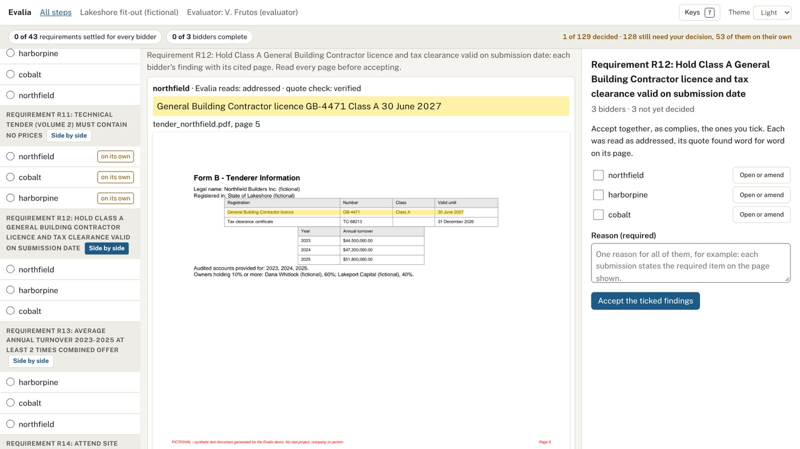
9A blind check against rubber-stamping
One in five findings accepted together is drawn at random and decided again with Evalia's reading hidden. A check that disagrees reopens the others.
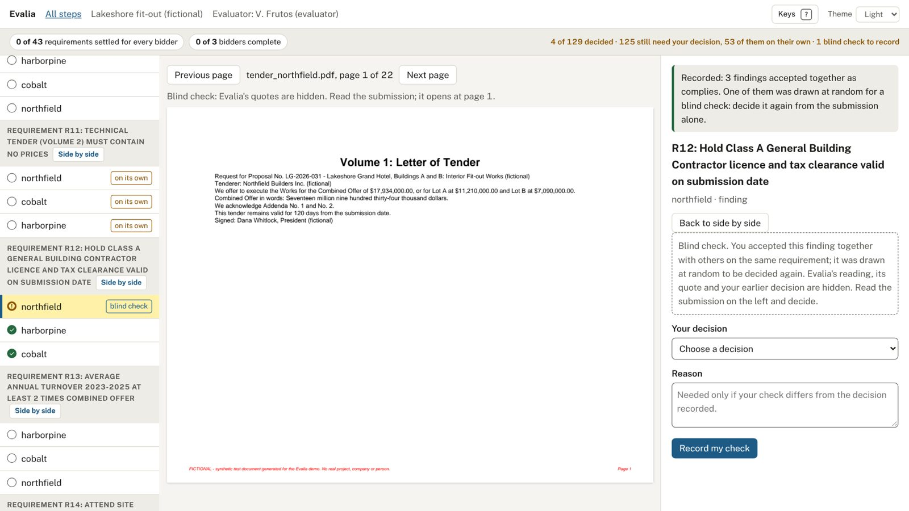
10Prices, checked by code
Once the technical evaluation is closed, code recomputes every priced line against the schedule issued. Here 24,200 times 180 is 4,356,000, not the 4,176,000 printed. The evaluator decides every price item; Evalia proposes no price adjustment.
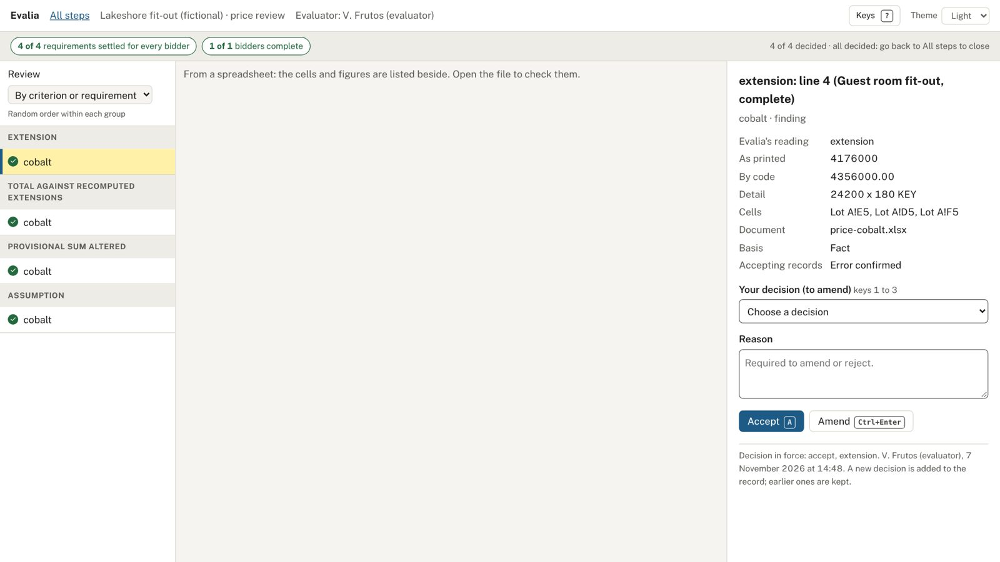
11A panel that never sees each other's work
With several evaluators, a moderator gives each role its criteria. Each evaluator reviews alone, on their own computer, and returns a locked file. Colleagues' scores open only after one's own return.
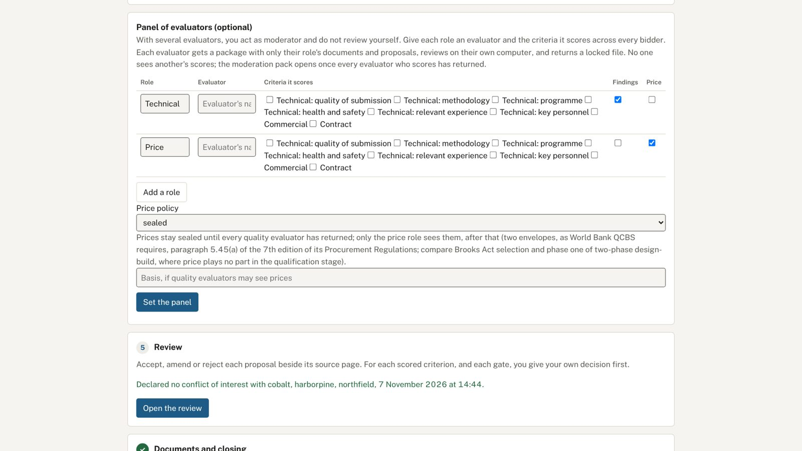
12The evaluator's own judgement, at closing
Before closing, Evalia summarises the evaluator's judgement: decisions made before its reading was shown, amendments with reasons, blind checks. It shows no agreement rate and no speed.
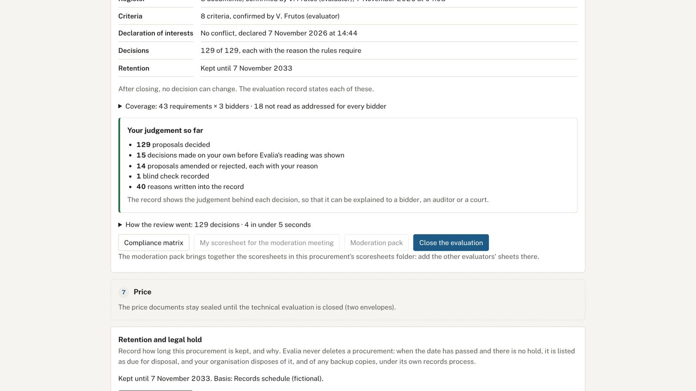
13Closed, with a complete record
Closing writes the compliance record, every decision with its reason and time, the evaluation record and a statement on the use of AI. After that, no decision can be changed.
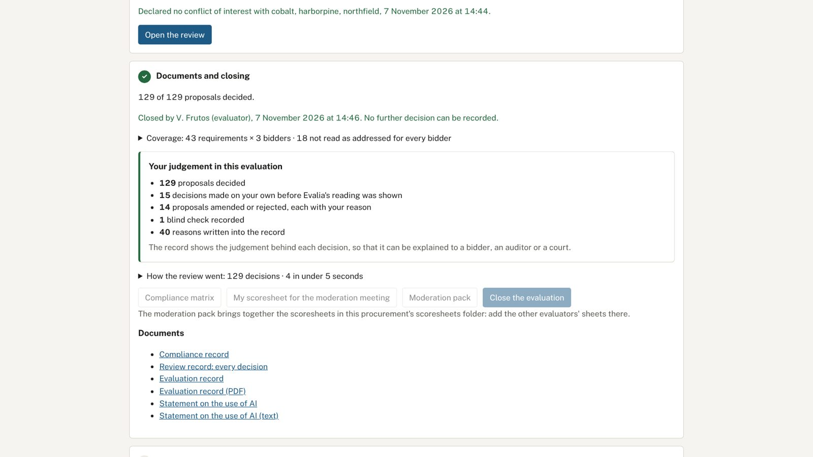
14Debrief letters, drafted without AI
Once the award is decided, Evalia drafts a letter for each bidder with its own scores and reasons, and only what the rules allow about the winner. Code refuses any letter that would name another bidder.
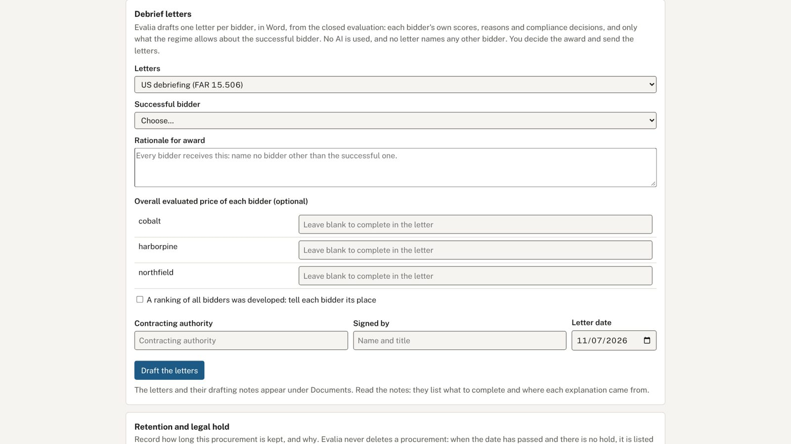
Evalia proposes; the evaluator decides every finding and score. The earlier prototype, with simulated readings, remains at its original address.